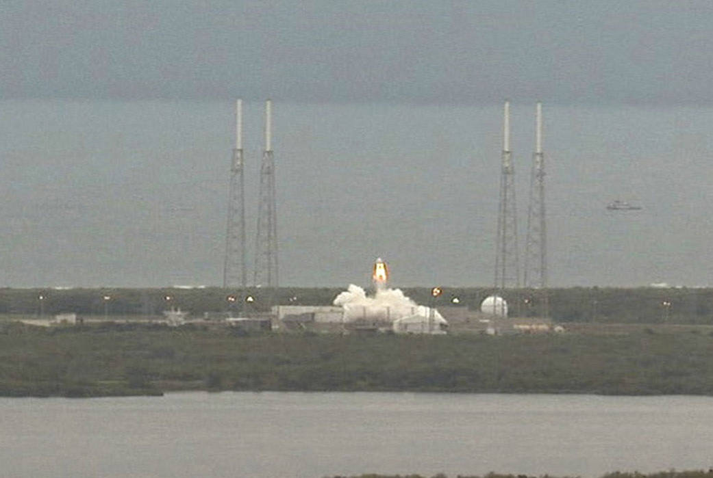

Il progetto mostrato e il veicolo che deve volare
La presentazione di Dragon V2, nel maggio 2014, dava una forma immediatamente riconoscibile all’ambizione di SpaceX. L’interno era pulito, gli schermi dominavano il posto di comando e il sistema di fuga era integrato nella capsula. La proposta non chiedeva soltanto di ripetere il passato: voleva far vedere che una nave con equipaggio poteva appartenere alla stessa stagione industriale che stava trasformando Falcon 9.
Una presentazione, però, mostra un concetto e un programma. Non dimostra ancora che ogni elemento possa lavorare insieme in tutte le condizioni richieste. Il pubblico vede un abitacolo; gli ingegneri devono misurare carichi, vibrazioni, margini termici, consumi, resistenza delle strutture e risposta ai guasti. Il passaggio dall’oggetto esposto alla nave accettata per il volo umano sarà molto più lungo di quanto quell’immagine futuristica lasciasse immaginare.
Alcune caratteristiche rimasero centrali: automazione, attracco diretto e fuga integrata. Altre cambiarono. È importante seguirle senza trattare ogni revisione come un tradimento. Il progetto iniziale era una proposta da rendere realizzabile e certificabile. Per una capsula con persone a bordo, la capacità di rinunciare a una funzione può essere altrettanto importante della capacità di inventarla.
Il 6 maggio 2015: fuggire da un razzo fermo
La prima dimostrazione spettacolare fu il pad abort del 6 maggio 2015. La capsula partì da una struttura di prova presso SLC-40, a Cape Canaveral. Non doveva raggiungere l’orbita e non portava astronauti. Doveva dimostrare di potersi allontanare da una situazione pericolosa durante la fase in cui un equipaggio sarebbe ancora vicino alla rampa.
Gli otto SuperDraco spinsero il veicolo lontano dalla piattaforma; seguirono le fasi di discesa sotto paracadute e l’arrivo in mare. Non era una miniatura di una missione ordinaria. Il profilo era costruito attorno a un’esigenza di emergenza, e i dati raccolti erano più importanti della brevità dello spettacolo. Una nave può trascorrere tutta la propria vita senza dover effettuare quella fuga, ma deve essere preparata a farlo in pochi istanti.
Il test utilizzava una configurazione che non va confusa con quella finale delle missioni operative. In quella prova si videro tre paracadute principali; Crew Dragon avrebbe successivamente adottato una configurazione con quattro. Le fotografie documentano un passaggio dello sviluppo, non autorizzano a descrivere il veicolo del 2020 usando ogni particolare del 2015.

A giugno la NASA approvò il completamento di questa tappa del programma CCiCap. L’agenzia non stava dicendo che Dragon fosse pronta per una rotazione di equipaggio. Riconosceva un risultato definito all’interno di un percorso più ampio. Questa distinzione tra una prova superata e il sistema certificato accompagnerà tutta la storia.
Filmato ufficiale SpaceX della prova di fuga dalla rampa. Il video è incorporato, non ripubblicato dal sito.
La rinuncia all’atterraggio propulsivo
La prima immagine di Dragon V2 includeva un’ambizione ulteriore: rientrare e posarsi usando la propulsione, anziché dipendere soltanto dall’ammaraggio sotto paracadute. Era una prospettiva coerente con la ricerca di SpaceX sul recupero e con l’interesse per missioni più lontane. Ma la coerenza di un’idea non basta a giustificare tutti i costi, le prove e i vincoli necessari per adottarla.
Nel 2017 Musk spiegò pubblicamente che questa strada non sarebbe stata perseguita per Dragon. La versione destinata agli astronauti avrebbe seguito il ritorno in mare. La revisione coinvolgeva anche le aspettative intorno a Red Dragon, il progetto di utilizzare una Dragon per una missione marziana. Non sarebbe corretto ridurre tutta la scelta a un generico “la NASA non lo permise”. Le difficoltà di qualificazione, l’utilità industriale e l’evoluzione dei progetti dell’azienda entravano nella valutazione.
La rinuncia non rendeva inutili i SuperDraco: rimanevano necessari per la fuga. Separava però due lavori che nel progetto iniziale sembravano poter convergere nello stesso apparato, salvare l’equipaggio durante l’ascesa e posare la nave alla fine del viaggio. La configurazione operativa conservò il primo, senza adottare il secondo. È un esempio concreto di sviluppo: non una linea retta verso tutto ciò che era stato promesso, ma una selezione di ciò che doveva essere portato al servizio.
Le prove che non finiscono nei manifesti
Fra la dimostrazione del 2015 e il primo viaggio orbitale c’era un lavoro meno visibile. I paracadute dovevano essere provati con condizioni e configurazioni differenti, comprese quelle che rappresentavano la perdita di una funzione. La nave doveva sopportare l’ambiente termico e il vuoto. Le comunicazioni e il software dovevano interagire con i sistemi della stazione. Gli astronauti dovevano addestrarsi con un’interfaccia nuova, mentre l’organizzazione costruiva procedure di assistenza ed evacuazione.
Le verifiche ambientali documentate dalla NASA nel 2018 al centro Plum Brook, oggi Neil Armstrong Test Facility, appartenevano proprio a questo lavoro. Un apparato che funziona in un laboratorio ordinario non è automaticamente pronto per il vuoto e per le condizioni termiche dello spazio. Anche una sequenza automatica riuscita in simulazione deve essere verificata contro interfacce reali e condizioni anomale plausibili.
Il lanciatore era parte della stessa responsabilità. Il Falcon 9 Block 5 doveva fornire prestazioni, configurazioni e comportamenti accettabili per il programma con equipaggio. Non si certificava una capsula astratta, da collocare sopra qualsiasi razzo capace di sollevarla. Anche le infrastrutture della rampa, il braccio di accesso, l’assistenza ai sistemi della nave e le vie di uscita dell’equipaggio appartenevano al viaggio.
Non basta una sola prova riuscita
Il pubblico ricordava una cabina elegante e un balzo rapido sopra la rampa. Per chi doveva approvare il trasporto umano, quei risultati erano soltanto l’inizio del fascicolo. Il capitolo successivo parte da questa distanza: tra una nave che appare vicina e una nave alla quale si possono affidare persone.
Fonti del capitolo
- NASA, approvazione della tappa pad abort, 8 giugno 2015.
- NASA, dimostrazione del sistema di fuga, 6 maggio 2015.
- NASA, Commercial Crew Program 2018: prove e stato dello sviluppo allora documentato.
- Intervento di Elon Musk alla ISS Research and Development Conference, 19 luglio 2017: archivio della registrazione e trascrizione: dichiarazione sulla revisione dell’atterraggio propulsivo e di Red Dragon. Resoconto dell’organizzatore.
Consultare l’atlante tecnico
Caratteristiche, schemi, configurazioni e limiti: SuperDraco · Hawthorne.